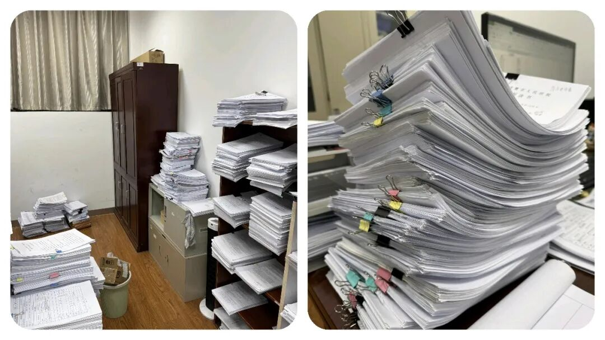
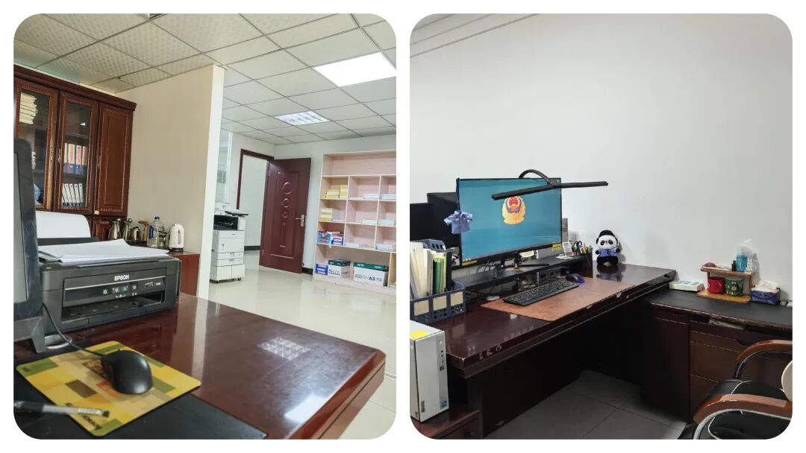
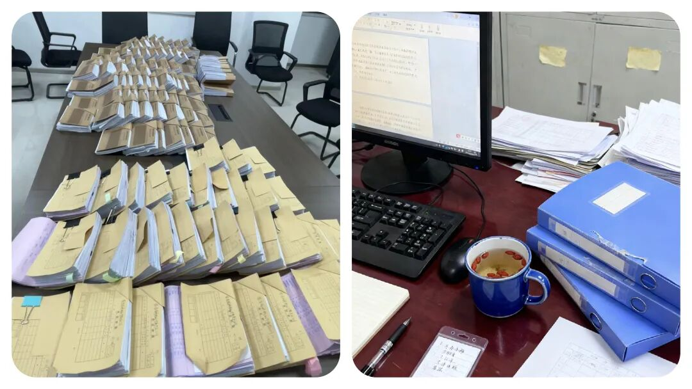
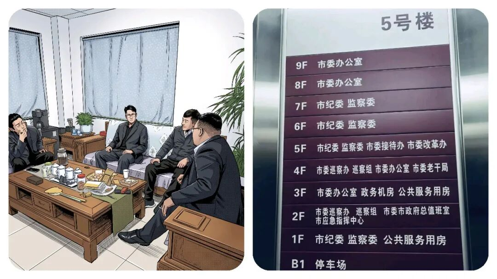
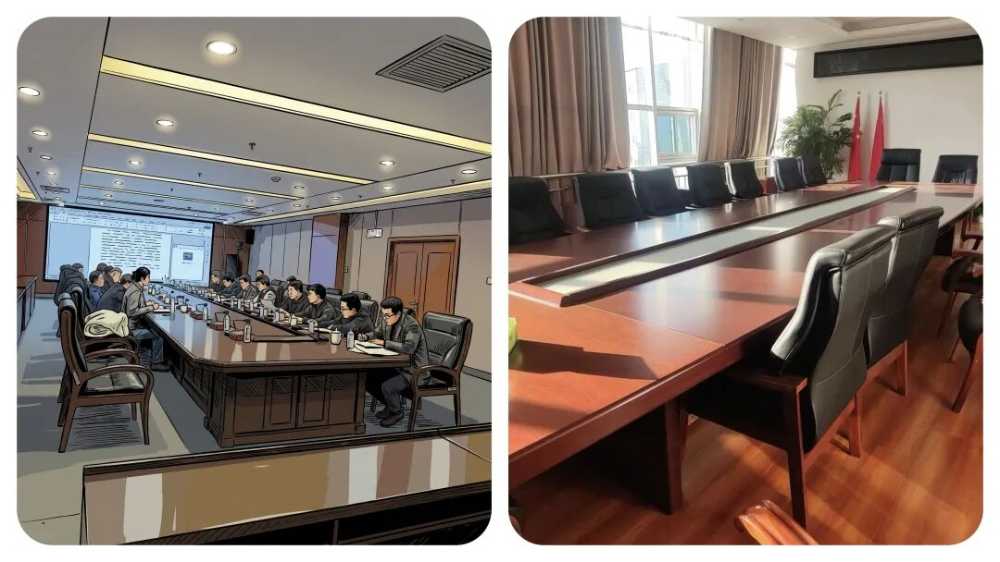

让乡镇干部“头疼”的不是领导？看似不起眼的 3 个部门，拿捏整个乡镇工作
原创
点击关注👉🏻
点击关注👉🏻
田间烟火
在小说阅读器读本章
去阅读
在小说阅读器中沉浸阅读
点击上方
蓝字
关注我们
田间烟火🔥
大家好，我是【田间烟火】～
我们一说到乡镇工作的难处，外人总以为干部们
日常就是完成县里的任务
、
应付各种会议
，其实真让大家头疼的
根本不是领导的批评
，而是那些动不动就“下沉”
督查、查账、问情况
的上级部门。
01
县纪委：干部心里的“紧箍咒”
县纪委是大家心里的“
紧箍咒
”。
只要有风吹草动，像一些群众反映了一件小事或者上面随机检查，纪委的人立马就飞到乡镇。
到了现场，先是
查作风、谈情况
，回答不到点子上，随时都有被点名的可能。
有的干部把会议记录整理错了细节，被纪委盯上，半天时间都得忙着解释说明，工作节奏全乱。
纪委的特点就是
毫不含糊，谁都怕
。

（注：文中插图仅供阅读，无不良引导，理性观看）
02
县督查办：压力更直接的催办者
这个和纪委比，县督查办的压力甚至更直接。
他们不等出事，每项工作、每个指标都分解到具体人头。
催报进度的时候，
不断发信息，发邮箱、打电话，滞后了马上督办通报
。
像那这种一项基础数据报送，
人手少，时间又紧，任务更重
，耽搁一天，第二天就全县通报。
这样的高强度节奏, 让不少乡镇负责人直言
“宁愿多干点，也别被督查办点到名字”
。

（注：文中插图仅供阅读，无不良引导，理性观看）
03
县审计局：每年一次的“期末大考”
县审计局每年都会
“抽查”乡镇
。
听说要来查账，办公室气氛一下子凝重。
财务台账、项目资金、工程合同
，审计人员一样一样过。
有一年，某乡镇因为一个几十块钱的误差，解释了大半天才理清，所有人松口气。
对财务不是特别熟练的干部来说，审计就像期末大考，既担心遗漏，更怕账目出错。

（注：文中插图仅供阅读，无不良引导，理性观看）
04
监督压力带来的改变
很多人觉得，上级领导说话比这些部门厉害。
其实，在实际工作里
请示、汇报反倒简单
明了，
最多被指导再来一次。
而纪委、督查办、审计局一旦发力，纯粹按标准操作，不带情绪也不讲情面，查到哪里算哪里，让人硬气不起来。
在这些压力的影响下，乡镇干部做事更讲流程，更追求台账规范
。
以前的人都是习惯
“先办后补”
，现在大家都知道流程走全。
像人家隔壁一个市县，前几年因为督查压力减小，
乡镇报表
质量下降
，最终出现信息混乱，反而累了自己。
对比下来，多一点压力，有时候也是不得不的选择。
当然，
并不是所有地方的县级纪委、督查办、审计局都这么“紧张”
。
也有些地方，督查过程注重指导帮扶，会
提前打招呼、具体到人
，帮助干部把短板补上。
和那种“
谁出错谁挨批
”相比，路线温和不少。
这种差异其实很大程度上影响了基层干部的心态，
有的地方干部更愿意主动报情况
，压力没那么大。

（注：文中插图仅供阅读，无不良引导，理性观看）
05
监督收紧的现实原因
不过站在上级角度，不断收紧监督手段也有现实压力。
考核
、
问责
、
舆情防控
，乡镇出点问题容易扩大，层层加码，
督查力度自然越来越大
。
像去年某地因为扶贫
项目账目不清，导致上级通报问责
，相关人员被免，县级部门从此对台账要求提高一级。
类似情况不仅仅是在
扶贫，民生、农村项目、
财务规范
都在变严。
和那些城市比，
乡镇工作节奏慢一点，但监督、考核频率越来越快
。
干部们必须在细节里“
扣分
”，不出错才能稳住。
有人说，现在的乡镇干部越来越像
“数据员”
，天天查台账、对数字，现场事务都得先过表格关。
这种转变，有人觉得繁琐，有人觉得规范，什么样的说法都有，各有各的道理和理解。
（注：文中插图仅供阅读，无不良引导，理性观看）
06
不同的监督模式
还有说法认为，
严厉的纪委、督查和审计，是为了系统帮干部“校准
”。
因为只有
底线管得住
，
工作才不容易滑坡
。
现实中，部分基层问题确实来源于放松了标准，
合同随意、账目不清、流程跑偏
，最后全都得靠查处倒查来兜底。
这种情况下，铁面部门存在的意义就体现在
“宁可多查一遍，也不能放过一个漏洞”。
但也有省份在尝试“
柔性督查
”，像一些宁波、苏州等地，县级部门下乡以业务咨询指导为主，实打实提供方案。
干部反馈压力轻一些，也更愿意求教和补短。
对乡镇来说，日子难过一点，但至少不用天天担惊受怕。

（注：文中插图仅供阅读，无不良引导，理性观看）
07
最后想说的话
说到底，
纪委、督查办、审计
，这三匹“黑马”对乡镇干部来说，就是一道
“碰不得”
的
红线
。
你干得再起劲，只要被他们关注，立刻要投入大量精力
查流程
、
补材料
、
理账目
，疏忽不得。
也正因为他们铁面无私，才让基层工作流程规范、数字准确、大事不出纰漏。
没错，压力是大了一点，不过也让乡镇干部更有敬畏感。
毕竟不是对上负责那么简单，
每一笔账、每一份表、每一项小节都藏着风险
，过于轻松反倒问题更多。
“怕”三大部门，怕得对，也怕得值。
你觉得现在基层台账多、报表繁，是规范必要，还是过度形式化？
一起来评论区交流讨论～